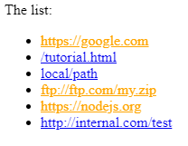

Атрибуты и свойства
Задачи
Получите атрибут
Напишите код для выбора элемента с атрибутом data-widget-name из документа и прочитайте его значение.
- ‹!DOCTYPE html›
- ‹html›
- ‹body›
- ‹div data-widget-name="menu"›Choose the genre‹/div›
- ‹script›
- /* your code */
- ‹/script›
- ‹/body›
- ‹/html›
Решение:
document.querySelector('[data-widget-name]').dataset.widgetName;
Сделайте внешние ссылки оранжевыми
Сделайте все внешние ссылки оранжевыми, изменяя их свойство style.
Ссылка является внешней, если:
- Её
hrefсодержит:// - Но не начинается с
http://internal.com.
Пример:
- ‹a name="list"›the list‹/a›
- ‹ul›
- ‹li›‹a href="http://google.com"›http://google.com‹/a›‹/li›
- ‹li›‹a href="/tutorial"›/tutorial.html‹/a›‹/li›
- ‹li›‹a href="local/path"›local/path‹/a›‹/li›
- ‹li›‹a href="ftp://ftp.com/my.zip"›ftp://ftp.com/my.zip‹/a›‹/li›
- ‹li›‹a href="http://nodejs.org"›http://nodejs.org‹/a›‹/li›
- ‹li›‹a href="http://internal.com/test"›http://internal.com/test‹/a›‹/li›
- ‹/ul›
- ‹script›
- // добавление стиля для одной ссылки
- let link = document.querySelector('a');
- link.style.color = 'orange';
- ‹/script›
Результат должен быть таким:
Решение:
const selector = 'a[href*="://"]:not([href^="http://internal.com"])';
const links = document.querySelectorAll(selector);
links.forEach(link => link.style.color = 'orange');